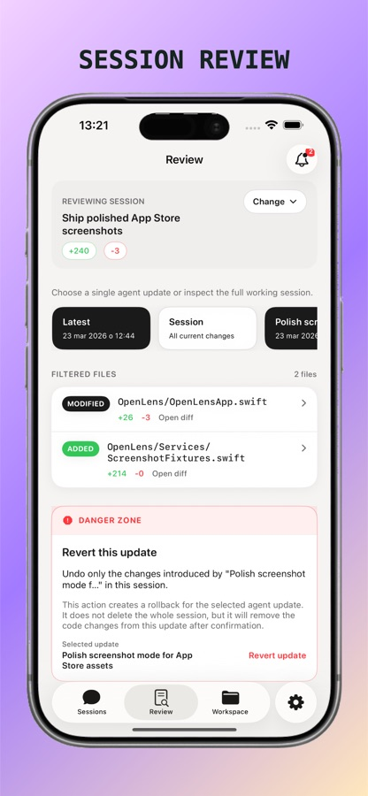
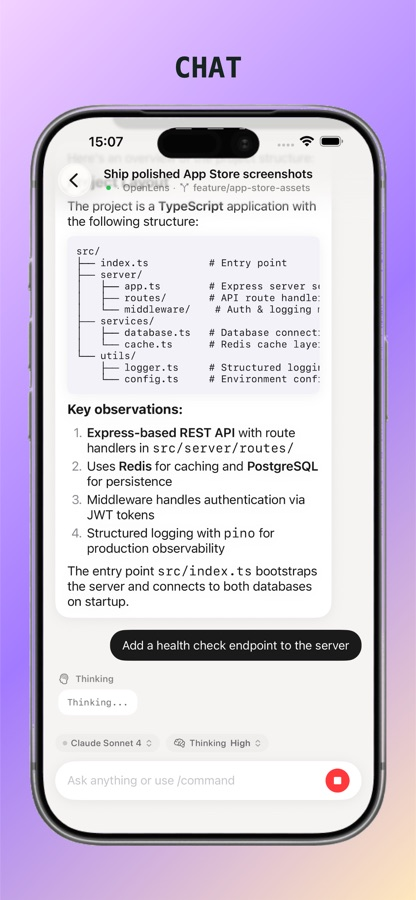
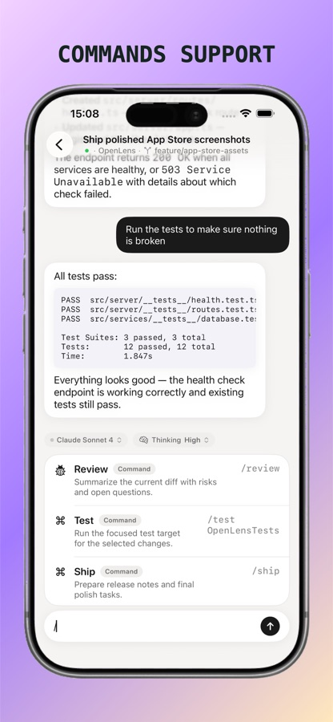
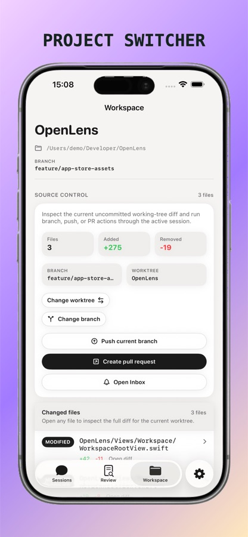

Continue every session
Chat with your coding agent, follow streaming progress, switch models, and manage sessions from iPhone or iPad.
Native OpenCode companion
Continue coding sessions, review changes, answer agent questions, and stay in control from your iPhone or iPad.


Built for real workflows
OpenLens keeps the important parts of your OpenCode workflow close without pretending your phone is a tiny laptop.
Chat with your coding agent, follow streaming progress, switch models, and manage sessions from iPhone or iPad.
Inspect diffs, answer interactive questions, and handle permission requests without returning to your Mac.
Use QR setup, Bonjour discovery, a manual LAN address, or encrypted Remote Access when you are away.
OpenLens runs no account system, application backend, or central relay. You choose and control the systems involved.


Optional Remote Access
Connect through your own Cloudflare Tunnel and Access configuration. OpenCode stays on your Mac, and the application payload is encrypted end-to-end between OpenLens and OpenLens Remote.
Privacy by architecture
Connection profiles and credentials remain on your devices. The OpenLens developer cannot access your Cloudflare account, coding sessions, files, or saved server details.
Read the Privacy PolicyThree steps
Start locally in seconds. Add Remote Access only when you want it.
Start your OpenCode server on the Mac where your projects live.
Scan a QR code, discover the server on your LAN, or pair through OpenLens Remote.
Continue the same session from your phone while OpenCode keeps running on the Mac.
Support
For product help, privacy requests, security concerns, or App Store review questions, contact the developer directly.